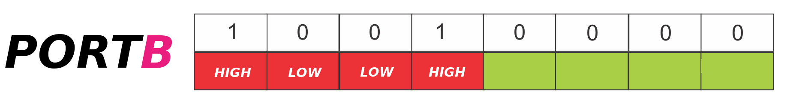

Programación de puertos digitals de entrada/salida
Los microcontroladores AVR tienen asociados 3 registros para cada uno de sus puertos de E/S, es decir 3 para el PUERTO A, 3 para el puerto PUERTO B, 3 para el PUERTO C y así sucesivamente dependiendo cuantos puertos implemente el modelo del microcontrolador AVR.
Data Direction Register x: Registro de dirección de datos.
Este registro configura si los pines del puerto x serán de entrada o salida. Es de 8 bits, donde cada bit representa un pin del puerto x. Si se escribe un 1 en algún bit de este registro, el pin correspondiente será configurado como salida, si se escribe un 0 se configura como de entrada. Por default todos los pines se configuran como entrada despues de un RESET.
Data Register x: Registro de Datos.
Este registro tiene una doble funcionalidad; cuando un puerto es de salida, el valor escrito (1 o 0) en alguno bit del registro será reflejado en el pin correspondiente .
Cuando el puerto es configurado como entrada, escribir un 1 en algún bit del registro activará la resistencia PULL-UP interna correspondiente al pin. Un 0 desactiva la resistencia PULL-UP interna.
Port Input Register x: Registro Entrada de Datos.
Este registro es de sólo lectura, y se utiliza para leer el estado de los puertos configurados como entrada. El valor de cada bit representa el estado lógico actual del pin que le corresponde.
En algunos modelos de microcontroladores (ver su datahseet), escribir en este registro invierte el estado de los pines configurados como salida (toggle).
Configurar los pines 0, 1, 2 y 3 del PUERTO B como entrada y los pines 4, 5, 6 y 7 como salida.
El valor del registro sería: 0xF0 (240 en decimal)
DDRB = 0xF0;
DDRB = (1 << PB4) | (1 << PB5) | (1 << PB6) | (1 << PB7);
Para escribir un 1 lógio en los pines 4 y 7 del PUERTO B se haria escribiendo el valor 0x90 (144 en decimal)

PORTB = 0x90;
PORTB = (1 << PB4) | (1 << PB7);
Para leer el estado del pin 2 del PUERTO B se lee el registro PINB completo y se hace una máscara con el bit 2 (0x04)
int input = PINB & 0x04;
int input = PINB & (1 << PB2);